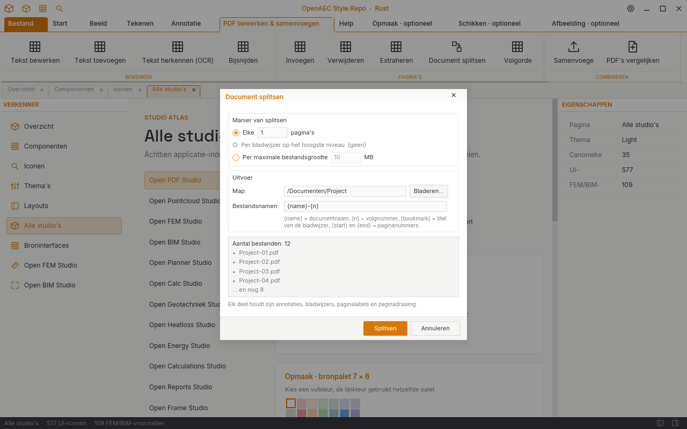
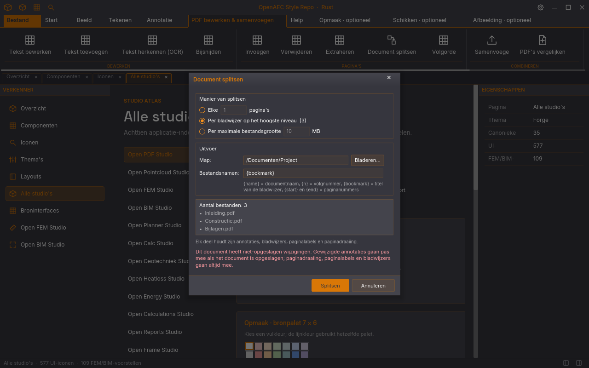

CSS- en JSX-maatstudie van het nieuwe, via Organiseren bereikbare venster op publieke main ae1d787. De voorbeeldinhoud hieronder gebruikt een fictief document van twaalf pagina’s.
ae1d787
De Style Repo tekent dezelfde 460px-dialoog in de gedeelde Rust-modal. De lichte render toont de standaardmodus zonder bladwijzers; Forge toont drie voorbeeldbladwijzers en de waarschuwing voor niet-opgeslagen wijzigingen. De modalchroom en themakleuren volgen de geharmoniseerde crate en zijn daardoor niet volledig pixelgelijk aan PDF Studio.

